Gather the evidence
Masks, depth, surface orientation, albedo, shading, and an HDR lighting prior constrain plausible scene explanations.
SINGLE IMAGE. EXPLICIT SCENE. EDITABLE LIGHT.
Evidence-Guided Programmatic 3D Scene Reconstruction
with Agentic Lighting Reasoning
Wangxuan Institute of Computer Technology, Peking University
01 / THE SCENE IS JUST THE BEGINNING
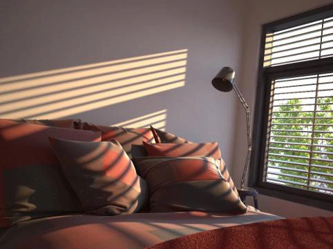
INPUT IMAGE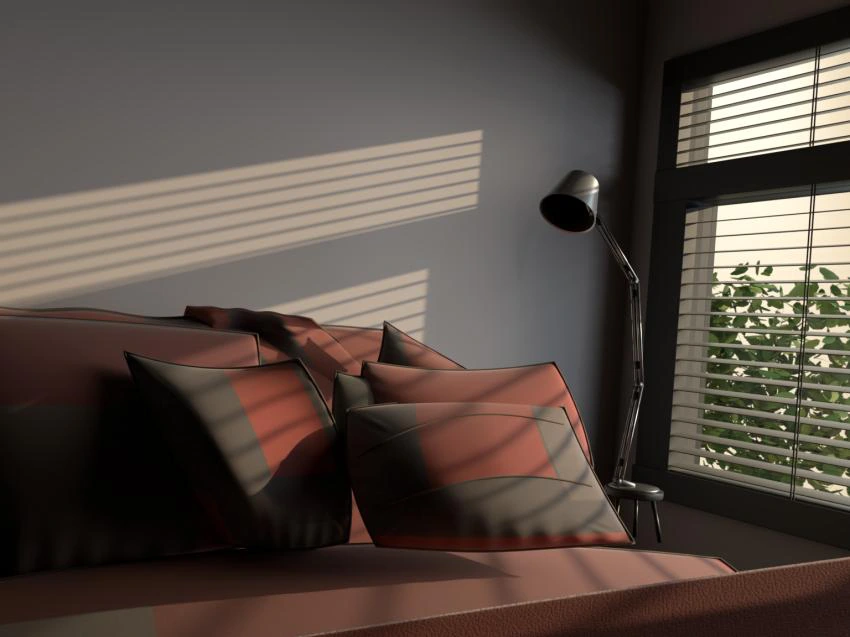
RECONSTRUCTED SCENEFrom Figure 1 of the paper. Select an edit to explore the rendered scene variants.
THE IDEA
A dark surface can mean dark material, a hidden occluder, or a missing light. Matching appearance alone does not tell us which scene property to change.
LightHarness reasons about them together. Complementary visual evidence and a persistent lighting memory guide a VLM agent to reconstruct an executable Blender scene—without additional training or differentiable rendering.
Read the method02 / HOW IT WORKS
A closed loop, grounded in evidence.
A lighting memory that lasts across iterations.
Masks, depth, surface orientation, albedo, shading, and an HDR lighting prior constrain plausible scene explanations.
Track each light’s identity, supporting evidence, parameters, and revision history—including off-frame source hypotheses.
Decomposed render passes, rubric scores, and VLM diagnosis guide revisions. Export the best valid scene and its matching light state.
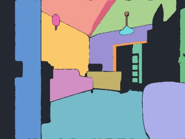
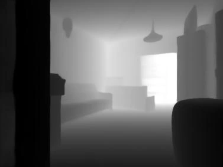
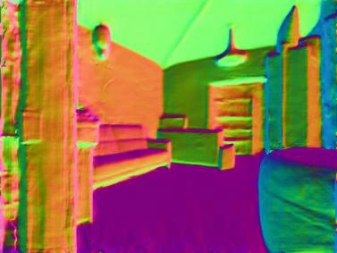
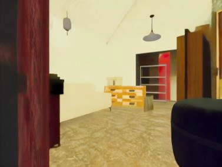
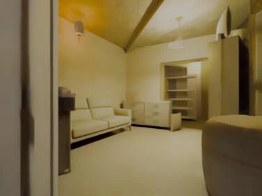
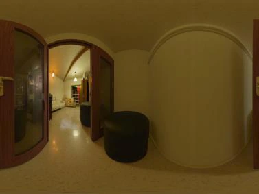
03 / RECONSTRUCTION
Explore all six scene comparisons
shown in Figure 4.
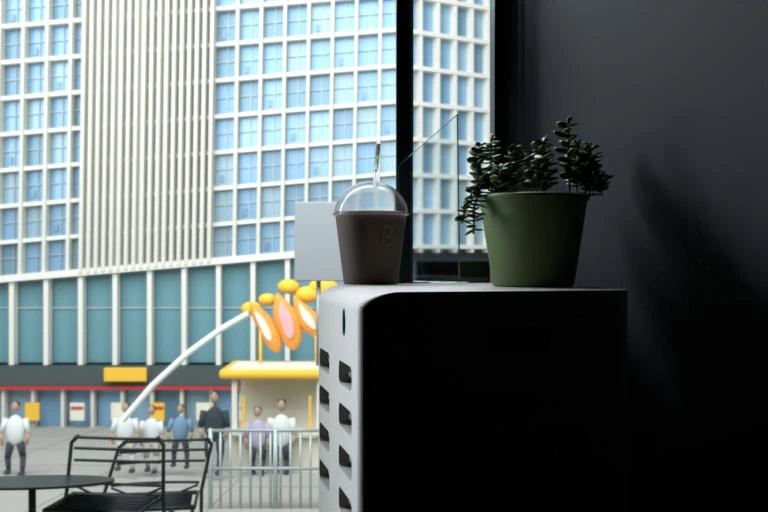
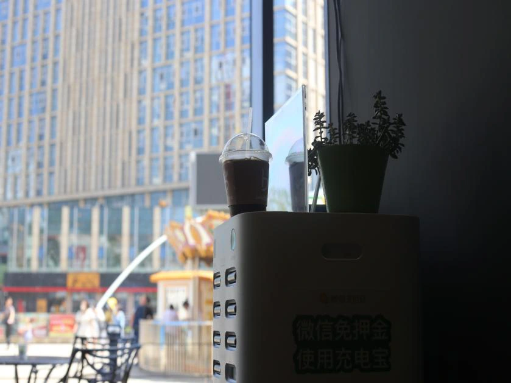
INPUTLIGHTHARNESSDrag to compare · Use arrow keys for precise control
Inspect how each method reconstructs the foreground against a bright window.
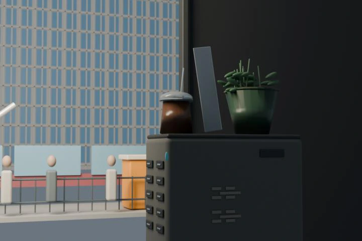
View all methods together ↗Reported in Table 1 of the supplied paper. User preference is measured across the five compared methods.
| Method | PSNR ↑ | SSIM ↑ | LPIPS ↓ | DreamSim ↓ |
|---|---|---|---|---|
| 3DCodeVerse | 10.21 | 0.428 | 0.677 | 0.363 |
| GPT-6-Sol | 13.03 | 0.503 | 0.548 | 0.318 |
| VIGA | 14.28 | 0.525 | 0.446 | 0.242 |
| SceneRig | 11.86 | 0.455 | 0.665 | 0.420 |
| LightHarness | 15.03 | 0.486 | 0.437 | 0.216 |
A diagonal cast shadow constrains both the surrounding structure and the illumination.
Removing evidence, geometric or lighting assessment, or memory affects layout and illumination.
EXPLORE IN 3D / THE SCENES BEHIND FIGURE 4
Orbit the actual reconstructed geometry.
Compare LightHarness with four baselines.
Models load on demand. Select a scene and a baseline, then open the 3D viewer.
Interactive previews use neutral studio lighting and approximate web materials; they do not reproduce Blender/Cycles light transport. Use the paper renderings to compare illumination. Cutaway hides recognized walls and ceilings. Linked navigation applies relative movements around each method’s own camera and scene scale.
04 / BEYOND RECONSTRUCTION
Change materials, insert objects, or move light.
The reconstructed scene makes the edits explicit.
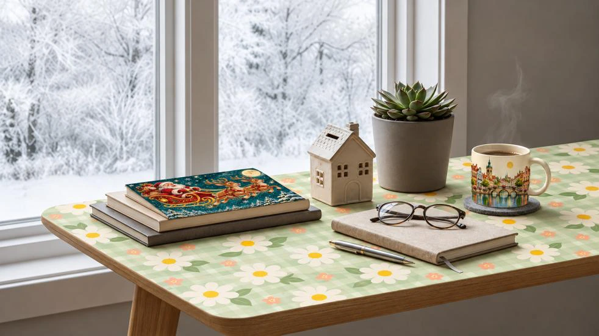
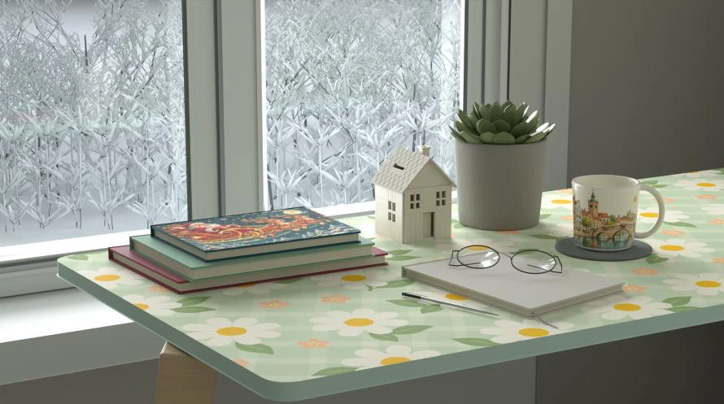
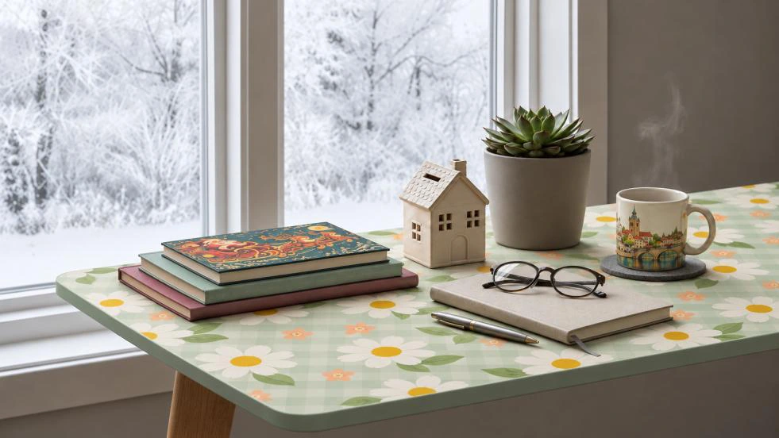
Replace multiple surface textures while retaining an explicit scene structure. The paper also explores GPT-Image post-processing of the rendered edit.
05 / TAKE A CLOSER LOOK
Read the paper or open a scene in Blender.
Method, experiments, applications,
and limitations.
Explore the bedroom geometry
and the half-closed blinds edit.
Inspect the inserted crystal ball,
materials, and colored light sources.
Scene downloads correspond to the Figure 1 examples. The page displays pre-rendered results; downloaded scenes can be inspected and re-rendered in Blender.
Inferring unseen objects from sparse or overlapping shadows remains difficult. Figure 11 shows incomplete reconstruction of shadows cast by off-frame people and a sign. More challenging scene examples and improved reasoning about unseen geometry remain directions for future work.
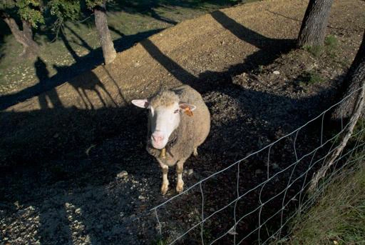
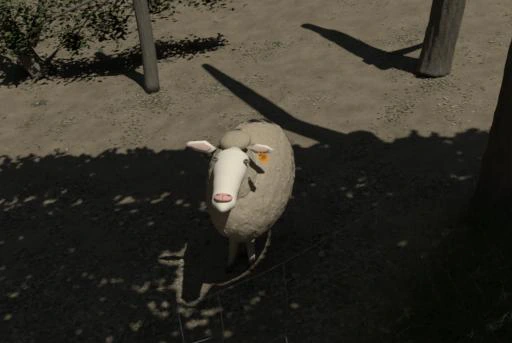